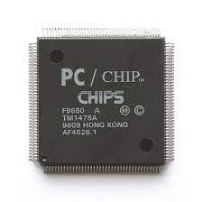
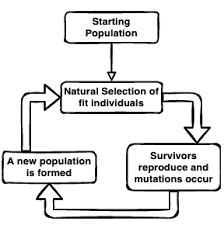

Grado en Ingeniería Informática: Cuarto Curso
Volver a Ingeniería Informática

Arquitectura y Organización de Computadores
José Manuel García Carrasco
Entregas de prácticas
Entregas de teoría

Sistemas Inteligentes
José Manuel Juárez Herrero
Apuntes de teoría
Ejercicios resueltos
Entregas de prácticas